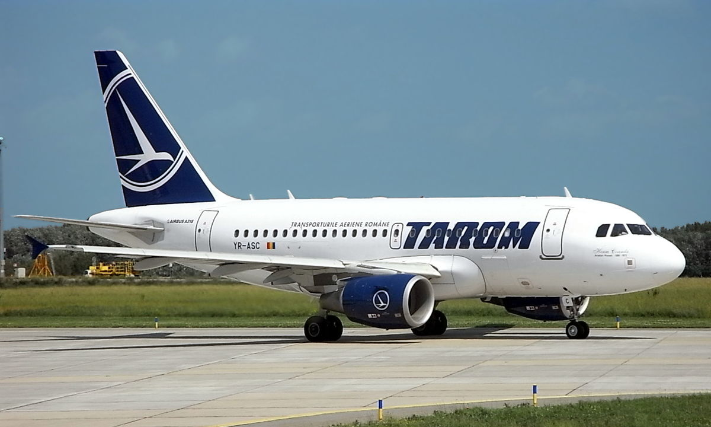

ANALYZE. What are the plans to withdraw the planes to Tarom?
15 July 2020
Tarom currently has 25 aircraft in its fleet. The oldest are 19 years old. Which planes are most likely to be withdrawn soon because of Covid-19? Let's find out.
The company has in its fleet 4 737-700 aircraft, 4 Airbus A318-111 aircraft, 4 ATR 72-600 aircraft from an order of 9, 2 ATR 72-500, 3 ATR 42-500 and 2 Boeing 737-800NG . Below we will make an analysis
about the first aircraft to be withdrawn.
ATR 72-500 and ATR 42-500
ATR 42-500 aircraft arrived in number 9 in the Tarom fleet in 1998-2000 and ATR 72-500, in number 2, in 2009, according to Tarom.
These will be completely replaced by the new ATR 72-600, numbering 9, by the end of this year.
ATR 72-600
On February 18, 2020, the first Tarom aircraft leaves Toulouse, from the ATR factory, to Romania.
To date, July 15, 2020, 4 devices have been delivered from a total of 9, replacing the ATRs 42-500. The aircraft are purchased under operational lease for a period of 10 years.
Boeing 737-800NG
In 2018 Tarom brought in the fleet 2 Boeing 737-800NG, also through operational leasing. Below are more details from this
communicated to the Tarom.
"TAROM: We will start the summer with two newly entered aircraft in the fleet, unique on the Romanian profile market
Two Boeing 737-800 NG (Next Generation) aircraft will enter the operation of TAROM, starting with June of this year.
Payment for the two Boieng 737-800 aircraft will start in 24 months, during which time TAROM will be able to make full use of the potential for passenger transport on existing routes and other new routes. The aircraft were purchased under operational leasing from Boeing, for a period of 7 years, based on the evaluation of offers received from the market in compliance with the regulation on the conclusion of purchase / mixed aircraft contracts, approved by the decision of the Director General TAROM.
The new aircraft can carry up to 160 passengers over a maximum distance of 2300 nautical miles (4259.6 km). We are confident that both the configuration of the two new aircraft and the technological performance will send a strong message, signed by TAROM, in the Romanian profile market.
At the moment, TAROM is the only company in Romania that includes in the fleet Boeing 737-800 NG aircraft with this configuration and premium equipment: 16 seats in business class, seats equipped with USB sockets, screens for entertainment mounted in the headrests and many others facilities for the comfort and pleasure of our passengers.
“By renewing the fleet, TAROM Company transmits a visible, credible and strong signal in the profile market. We are a serious company that is carefully building its growth in air transport.
We are very happy that in the Centenary Year the TAROM Company regains its wings. It is a fulfilled promise, both for our passengers and for TAROM employees. We all need to believe, once again, that TAROM can reinvent itself and regain an honorable place in the profile market, ”said TAROM General Manager Werner-Wilhelm Wolff.
Because Romania celebrates the Centenary Year, TAROM makes a symbolic contribution to our national celebration: the aircraft newly entered our fleet will bear the iconic names of the personalities who have contributed, throughout history, to the Union of Romanians: "Mihai Viteazul" and Alexandru Ioan Cuza ".
Your TAROM team "
Airbus A318
Tarom also has 4 Airbus A318-111 aircraft in its fleet, which arrived in 2006-2007. So far, Tarom has not mentioned their withdrawal, all circulating today.
Note:
For the curious, forget it herean article written on December 4, 2007 about the arrival of the 4th Airbus A318-111.
Boeing 737-700
In 2001, YR-BGF and YR-BGG, 2 brand new Boeing 737-700s, joined the Tarom fleet. Two years later, YR-BGH and YR-BGI, also new 737-700s, were coming to the Romanian carrier's fleet. 17 years later, in 2020, the 4 aircraft are still flying with the same company. These are the oldest aircraft in the Tarom fleet.
Upcoming purchases
In the spring of 2019, Tarom and Boeing signed a contract for 5 Boeing 737 MAX 8 aircraft, with a delivery deadline of 2023.
Conclusion
Most likely due to COVID-19 in the Tarom fleet, they will leave in addition to the 7 ATR 42-500 and 2 ATR 72-500 and at least 1 of the 2 Boeing 737-700 aircraft purchased in 2001 this year.
Next year we should expect all 4 737-700 to leave the Romanian carrier's fleet, in 2025 the NG's 737s will leave the fleet, with the end of the operating lease, after the Airbus A318 and in 2030 the 9 ATR 72-600*.
* The conclusion is based on the age of the aircraft
Tarom pilots anticipate the company's bankruptcy by the end of 2020
3 July 2020

Tarom is in its 12th consecutive year of losses. The company has 1,800 employees and 29 aircraft. The company's pilots see Tarom stagnate in losses for more than 10 years.
After bankruptcy
If a concrete recovery program is not implemented, 600 pilots and flight attendants will lose their jobs, along with the 1,200 technical and bureaucratic employees that the Minister of Transport said are related to each other, Mediafax writes.
What Tudor and Andrei say
Tudor is a young man who often flew with Tarom and, like any Romanian, pays monthly taxes from which the state offered the company a restructuring loan of 36.7 million euros. If clear measures are not taken, not all the money in the world could save Tarom from bankruptcy, says Andrei, a 10-year-old Tarom pilot.
Since working in the company, he has not caught a single year in which Tarom is not at a loss.
"We know the history of the company, we know that in the last 10 years it has not been profitable. Several directors have changed management, none of whom have managed to leave their mark or restructure the company. We have to ask ourselves what will be the solution? A capital injection with money from the budget or an efficient restructuring ", said Tudor, a Tarom client.
"In 2004, Tarom had $ 800 million in its accounts, and now we have nothing. As long as you throw money out the window paying some contracts over the value you should pay, your (profit) margin becomes zero ", says Andrei Rusu, a 10-year-old pilot at Tarom.
"If you ask me how to relaunch Tarom: first of all it would be a manager with experience in the field of aviation, who should be allowed to cut harmful contracts and be left long enough to carry out his management plan. good end. ”, said the pilot Andrei Rusu.
Fleet and losses
The company has 29 aircraft and had the highest occupancy margin at 70%. Tarom estimated losses of over 170 million lei last year.